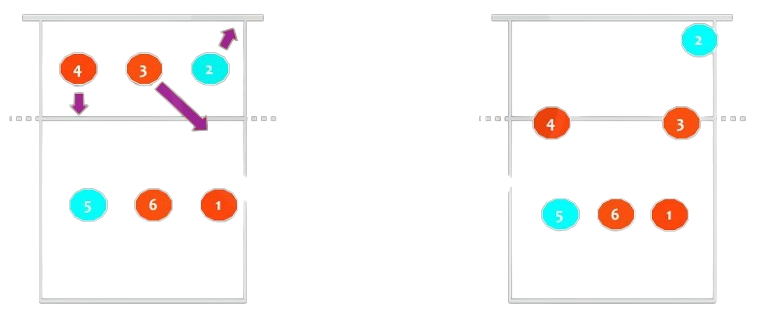
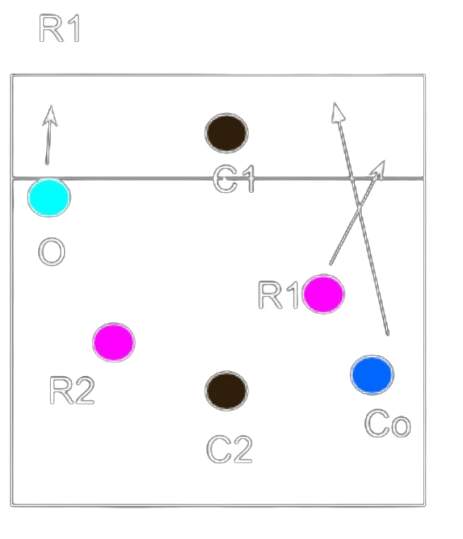
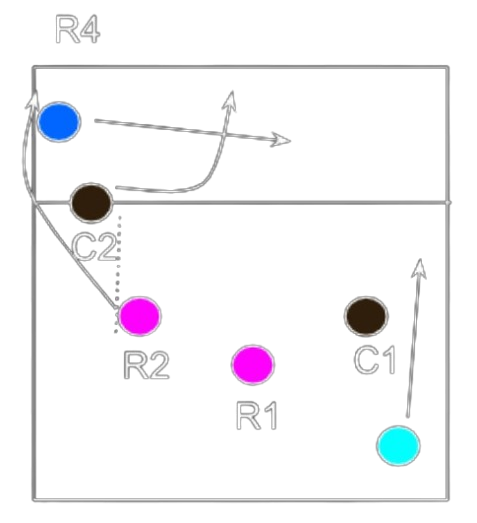
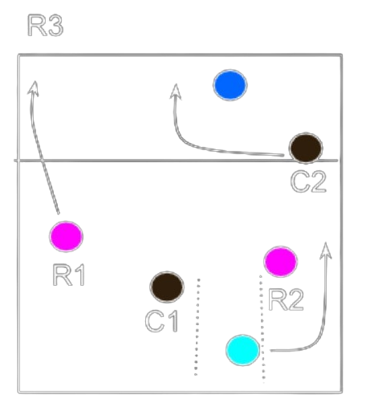
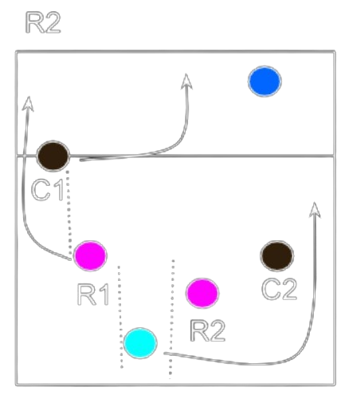

Formaremos con cuatro atacantes y dos colocadores siempre en diagonal entre sí.
El jugador de 1 en diagonal de 4, el de 6 con el de 3 y el de 5 con el de 2

↑ Sistema juego 4-2 | colocador 4-1

↑ Sistema juego 4-2 | colocador 3-6

↑ Sistema juego 4-2 | colocador 2-5
Vamos a ver concretamente cómo tenemos que organizar nuestra rotación partiendo siempre de nuestra posición colocadora:

↑ Sistema juego 5-1 | colocador en 1

↑ Sistema juego 5-1 | colocador en 1

↑ Sistema juego 5-1 | colocador en 1

↑ Sistema juego 5-1 | colocador en 1

↑ Sistema juego 5-1 | colocador en 1
